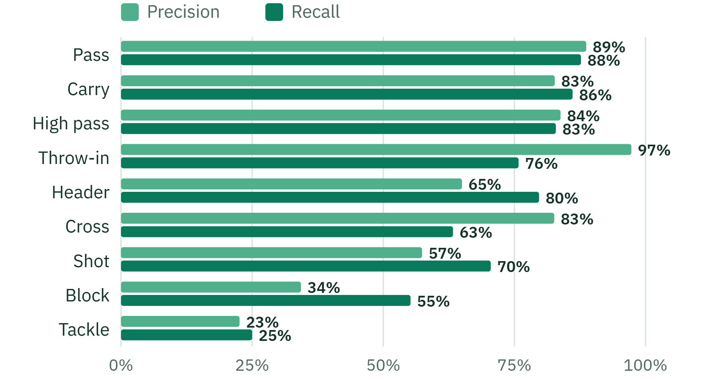

Backup · finding events from video
Precision and recall by event type
Model: T-DEED action spotter, fine-tuned. 2 unseen games, best-F1 threshold per type

The same results as counts
Found = TP, invented = FP, missed = FN
Mean average precision over all 12 event types: 0.628 (published weights: 0.606).
SoccerNet BAS test: Reading–Fulham and Stoke–Huddersfield, 3,980 labelled actions, ±1 s · PitchProfile · AAI3001
29